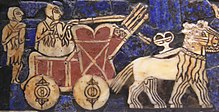
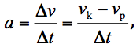

-Mechanika je obor fyziky, který se zabývá mechanickým pohybem, tedy přemísťováním těles v prostoru a čase a změnami velikostí a tvarů těles.
-Mezi veličiny, které nejčastěji používá patří poloha, rychlost, zrychlení, síla, energie a hybnost.
Ale nejvíce základní je Zrychlení (akcelerace)=charakteristika pohybu, která popisuje, jakým způsobem se mění rychlost tělesa (hmotného bodu) v čase.
Značka: malé a
Průměrné zrychlení je definováno jako změna velikosti rychlosti dělená dobou, kterou je potřeba k této změně
kde a je průměrné zrychlení, Δv změna rychlosti, vk, konečná rychlost, vp počáteční rychlost a Δt doba, za kterou dojde k uvedené změně rychlosti.
